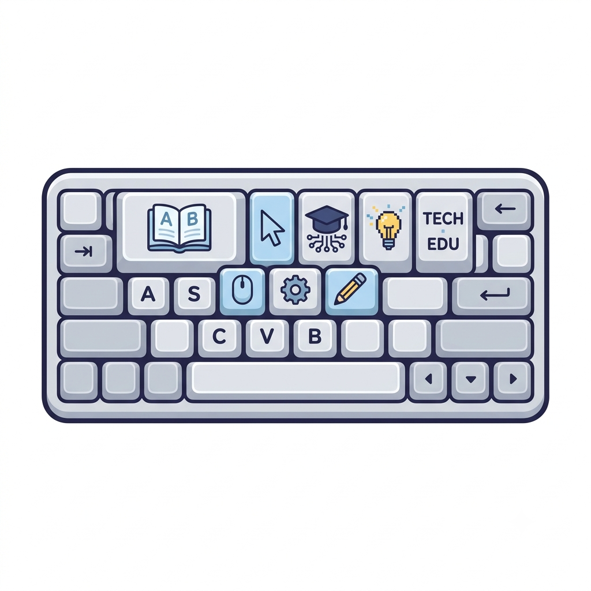

Meu primeiro post
Por: Thaynan Vinicius
Boas-vindas ao meu novo blog! Aqui vou compartilhar dicas de programação e curiosidades da área de tecnologia.
Vou compartilhar conhecimentos sobre tecnologia e programação
Por: Thaynan Vinicius
Boas-vindas ao meu novo blog! Aqui vou compartilhar dicas de programação e curiosidades da área de tecnologia.

Por: Thaynan Vinicius
O mouse facilita a interação com o computador, permitindo controlar várias funções de forma rápida e prática.

Por: Thaynan Vinicius
⌨ Christopher Latham Sholes é geralmente considerado o principal inventor do primeiro teclado de máquina de escrever com o layout QWERTY, desenvolvido na década de 1860.
Ele criou esse sistema junto com Carlos Glidden e Samuel W. Soule. O teclado QWERTY acabou influenciando os teclados de computador que usamos hoje.
Fonte: Gemini